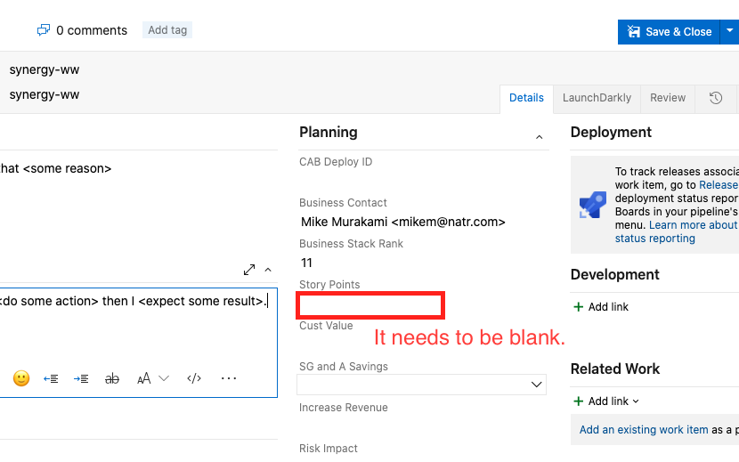
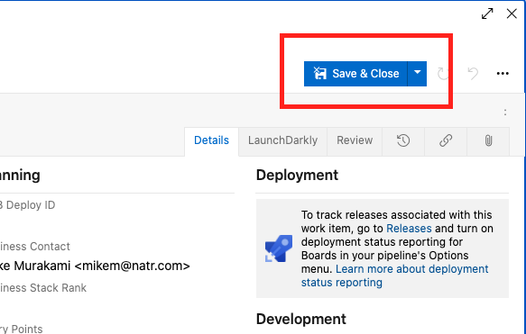

How to Create a User Story
If you want to build products your customers love, then you need to get user stories right.
Step 1: Select a backlog
For example, if you want to create a user story for the Mobile apps, then create a user story in the Mobile backlog.
- R2 backlog
- Web & Services backlog
- Mobile backlog
- Kiosk backlog
- Pickup Center Apps Backlog
- Power BI Backlog
- SSRS Backlog
Step 2: Click on New Work Item
Step 3: Select "User Story" and write your title
- Select User Stroy
- Write your title
- Make sure "Add to bottom" is selected and then press the blue button

Step 4: Write your User Story
Let's write a good user story. You need to write a user story from the perspective of the end-user. Here is the format of the user story.
As a user role, I want some goal so that some reason .
Here are the examples of user role:
- distributor
- distributor or consumer
- distributor or consumer or retail customer
- subject matter expert
- customer service agent
Step 5: Add screenshots or mockups in the Description area
We recommend people to use Tech Smith Capture for screenshots.
Step 6: Add Business Impact in the Description area

Step 7: Write your Acceptance Criteria
QA will use Acceptance Criteria to test a feature/functionality so please be specific.
Given that I am a type of user, when I do some action then I expect some result.

Step 8: Delte Story Points
The Story Points field should be blank.

Step 9: Add a country tag
Find your country from below and add a tag.
| Country | Tag | Country | Tag |
|---|---|---|---|
| Hong Kong | HK | Indonesia | ID |
| Japan | JP | Korea | KR |
| Malaysia | MY | Singapore | SG |
| Thailand | TH | Taiwan | TW |
If you are doing a UAT (User Acceptance Testing), add the "UAT" tag as well.
Step 10: Assign your users story to a product manager
Please assign all the user stories to Mike Murakami except for Power BI stuff. For Power BI stuff, please assign it to Andy Green.
Step 11: Hit "Save & Closed"
Once you finish writing a user story, click on the "Save & Close button".

Points to be Careful Of
- Make sure the state of a user story is set to "New". Please do not change the state.
Here is a short video on how to create a user story